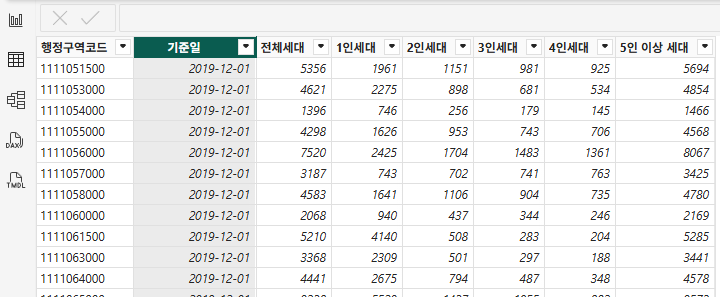
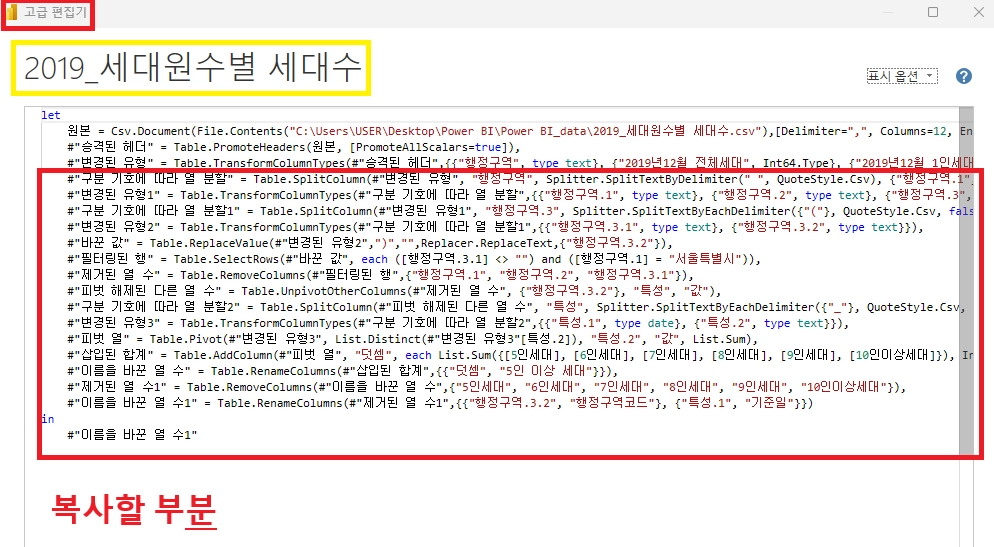
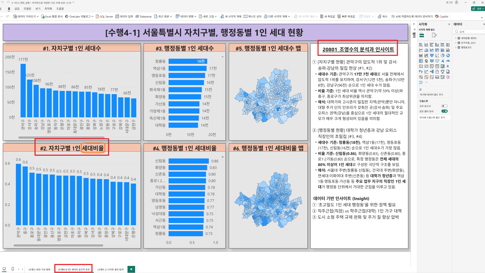

[16차시] 서울의 1인 가구 분석 보고서
📊 서울 1인 세대 데이터 분석 프로젝트
1단계: 분석 개요
• 서울시 1인 세대 증가 현황 및 사회적 변화에 대한 지식 파악
• 분석 범위(서울시 행정동 426개, 2019~2023년)
2단계: 문제 정의
- "세대 구성은 어떻게 변하고 있는가?"
- "1인 세대는 어디에 많이 분포하는가?"
3단계: 데이터 수집
- 주민등록 통계 데이터: 행정동별 세대 구성 현황 파악용
- 인구이동 통계 데이터: 전입/전출, 성별, 연령, 이동 사유 정보
- 행정동 코드 데이터: 지역 명칭과 코드 연계 위한 기초 자료
🚍서울의 1인 가구 분석 데이터
인구이동_2023.csv 파일과 .json 파일은 ‘클래스룸-자료’를 참고하세요.
[수행1]은 아래 이미지처럼 준비된 상태에서 진행합니다.


[수행1] 2019 자료의 <고급 편집기>에서 복사(ctrl+c)/붙이기(ctrl+v)


2019_세대원수별 세대수 파일의 <고급 편집기>에서 해당 내용을 복사한 이후
(1) 2020_세대원수별 세대수 파일의 <고급 편집기>에서
(2) 4행 #”변경된 유형 ~ “ 줄의 맨 마지막(Int64.type}}) 뒤에 쉼표(‘,’)를 찍은 후
(3) 아래의 모든 내용을 삭제함.( in #”이름을 바꾼 열 수1” 부분 포함)
(4) 2019년 데이터의 복사한 내용을 그대로 붙여넣음.
(5) 같은 과정을 2021, 2022, 2023년도 반복함.
[수행1] 제출: 캡처 파일 + pbix 파일
1차시 제출할 캡처 화면(참고)

[수행2] 27쪽 ~ 37쪽
<2차시를 위한 작업 순서>
1. 1차시에 제출한 본인의 ‘1차시_학번_성명.pbix’파일과 ‘2019_세대원수별 세대수.csv ~ 2023_세대원수별 세대수.csv’ 파일을 다운로드 한다. 다운로드 폴더로 이동하여 ‘1차시_학번_성명.pbix’ 파일을 더블클릭으로 실행한다.
2. 1차시 파일을 power BI로 열었는데, ‘세대원별 세대수’ 파일이 보이지 않고, ‘2019_세대원수별 세대수’ 파일만 보이면, 1차시 과제를 제출할 때 최종 ‘닫기 및 적용’(저장)이 제대로 되지 않았기 때문이다. 부득이 ‘2019_세대원수별 세대수’ 파일로 ‘고급편집기’를 이용해 나머지 파일을 작업하여, 1차시 종료 시점의 파일을 완성해야 한다.
3. ‘세대원별 세대수’ 파일이 있으면 정상이다. 이제 홈-데이터가져오기로 가서 인구이동_2023.csv 파일을 연다. (데이터 가져오기-텍스트/CSV 파일 가져오기) 인구이동_2023.csv 파일은 클래스룸에서 다운로드하면 된다.
4. 데이터 분석(가공) 작업은 쿼리 화면에서 한다. 쿼리 화면 전환은 ‘홈-데이터변환-데이터변환’을 하면 된다.
5. 37쪽까지 작업이 완료되면 반드시 ‘닫기 및 적용’ 후 꼭 ‘2차시_학번_성명’으로 저장을 하여 모든 내용이 제출용 파일에 반영되도록 한다.
6. 2차시 제출할 파일에 포함되는 쿼리는 총 8개이다.
(1) 2019_세대원수별 세대수, (2) 2020_세대원수별 세대수, (3) 2021_세대원수별 세대수
(4) 2022_세대원수별 세대수, (5) 2023_세대원수별 세대수, (6) 세대원별 세대수
(7) 인구이동_2023, (8) 행정동코드
2차시 제출할 캡처 화면(참고)

[수행3] 38쪽 ~ 45쪽
서울의 세대 구성 형태 변화 시각화
(‘학번_성명+분석과 인사이트’작성)
3차시에 제출할 캡처 화면
#1.연도별 세대수 변화
#2.세대 구성 형태 변화
#3.세대 구성 형태(2019.12.)
#4.세대 구성 형태(2023.12.)
+ 본인의 분석과 인사이트(‘분석과 인사이트’는 본인 생각으로 작성)
[수행3], [수행4-1], [수행4-2]는 보고서의 탭을 아래 이미지와 같이 새로 생성합니다.

[수행4-1] 46쪽 ~ 58쪽
서울특별시 자치구별 행정동별 1인 세대 현황
(‘학번_성명+분석과 인사이트’작성)
[4-1차시] 화면 : 상단 제목은 ‘텍스트 상자’ 툴 이용
#1.자치구별 1인 세대수
#2.자치구별 1인 세대비율
#3.행정동별 1인 세대수
#4.행정동별 1인 세대비율
#5.행정동별 1인 세대수 맵
#6.행정동별 1인 세대 비율 맵
+ 분석 결과 해석(‘분석과 인사이트’는 본인 생각으로 작성)


[수행4-2] 59쪽 ~ 70쪽
서울의 1인 세대 최종 분석
(#6의 분석은 ‘학번+성명+자기 생각’)
4-2차시 제출할 캡처 화면(참고)
#1. 성별로 보는 1인 세대
#2. 나이대별 1인 세대
#3. 이사 온 이유
#4-1. 시군구읍면동별 전입세대수
#4-2. 선호 지역 분포
#5. 시각화 결과 탐색 분석(본인의 분석을 최대한 반영해 작성)